Comunicação acessível, feita em comunidade
Toda pessoa merece ser ouvida.
O Talking Hands é um projeto open-source que cria soluções para ampliar a comunicação de pessoas com deficiências severas de expressão verbal.
Faça parte do projeto
Ideias que aproximam01 / SOBRE O PROJETO
Comunicação é um direito. Acessibilidade abre caminhos.
O projeto reúne pessoas interessadas em construir ferramentas acessíveis e colaborativas. Cada contribuição ajuda a criar novas formas de expressão e participação.
Conheça e contribua no GitHub